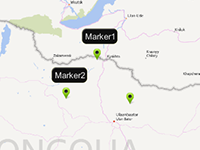

Example of how to show marker labels, only in the zoom range.
Usage instructions:
Add this script to map GameObject.
Add this script to map GameObject.
ShowMarkerLabelsByZoomExample.cs
/* INFINITY CODE 2013-2016 */
/* http://www.infinity-code.com */
using UnityEngine;
namespace InfinityCode.OnlineMapsExamples
{
[AddComponentMenu("Infinity Code/Online Maps/Examples (API Usage)/ShowMarkerLabelsByZoomExample")]
public class ShowMarkerLabelsByZoomExample : MonoBehaviour
{
private void Start()
{
OnlineMaps api = OnlineMaps.instance;
// Create a new markers.
OnlineMapsMarker marker1 = api.AddMarker(new Vector2(0, 0), null, "Marker 1");
OnlineMapsMarker marker2 = api.AddMarker(new Vector2(10, 0), null, "Marker 2");
// Store data about labels.
marker1.customData = new ShowMarkerLabelsByZoomItem(marker1.label, new OnlineMapsRange(3, 10));
marker2.customData = new ShowMarkerLabelsByZoomItem(marker2.label, new OnlineMapsRange(8, 15));
// Sunscribe to ChangeZoom event.
api.OnChangeZoom += OnChangeZoom;
OnChangeZoom();
}
private void OnChangeZoom()
{
OnlineMaps api = OnlineMaps.instance;
foreach (OnlineMapsMarker marker in api.markers)
{
ShowMarkerLabelsByZoomItem item = marker.customData as ShowMarkerLabelsByZoomItem;
if (item == null) continue;
// Update marker labels.
if (item.zoomRange.InRange(api.zoom)) marker.label = item.label;
else marker.label = "";
}
}
public class ShowMarkerLabelsByZoomItem
{
/// <summary>
/// Zoom range where you need to show the label.
/// </summary>
public OnlineMapsRange zoomRange;
/// <summary>
/// Label.
/// </summary>
public string label;
public ShowMarkerLabelsByZoomItem(string label, OnlineMapsRange zoomRange)
{
this.label = label;
this.zoomRange = zoomRange;
}
}
}
}